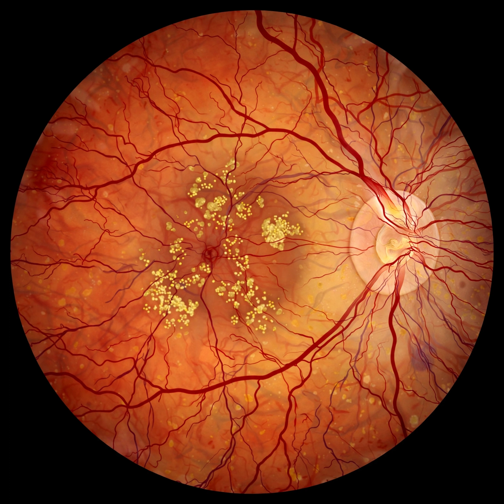

| Specialty | Ophthalmology |
|---|---|
| Symptoms | Blurred or reduced central vision, metamorphopsia |
| Types | Dry (atrophic), wet (neovascular) |
| Risk factors | Age, smoking, genetics, family history |
| Treatment | Anti-VEGF injections (wet form), AREDS supplements, low-vision aids |
Macular degeneration, also known as age-related macular degeneration (AMD or ARMD), is a medical condition which may result in blurred or no vision in the center of the visual field. Early on there are often no symptoms. Over time, however, some people experience a gradual worsening of vision that may affect one or both eyes. While it does not result in complete blindness, loss of central vision can make it hard to recognize faces, drive, read, or perform other activities of daily life.
Macular degeneration typically occurs in older people. Genetic factors and smoking may play a role. It is due to damage to the macula of the retina. Diagnosis is by a complete eye exam. The severity is divided into early, intermediate, and late types. The late type is additionally divided into "dry" and "wet" forms, with the dry form making up 90% of cases.
Peripheral vision remains intact, since the disease affects only the macula, the small central region of the retina responsible for sharp, detailed vision.
Age is the strongest predictor. Other risk factors include a family history of the disease, smoking (which roughly doubles risk), cardiovascular disease, obesity, and variants in genes such as complement factor H (CFH) and ARMS2. The disease begins with the accumulation of drusen — yellow deposits of lipids and proteins beneath the retinal pigment epithelium.
In dry (atrophic) AMD, drusen enlarge and the retinal pigment epithelium deteriorates, leading in advanced cases to geographic atrophy and slow central vision loss. It accounts for about 90% of cases and progresses slowly.
In wet (neovascular or exudative) AMD, abnormal blood vessels grow from the choroid beneath the macula (choroidal neovascularization). These vessels leak fluid and blood, causing rapid and severe vision loss if untreated.
There is no cure for dry AMD; the AREDS and AREDS2 vitamin formulations (vitamins C and E, lutein, zeaxanthin, zinc and copper) can slow progression in intermediate disease. Wet AMD is treated with intravitreal injections of anti-VEGF agents such as ranibizumab, aflibercept and bevacizumab, which suppress abnormal vessel growth. Smoking cessation and a diet rich in leafy greens and fish are commonly recommended.
AMD is a leading cause of vision loss in people over 50 in the developed world, affecting roughly 200 million people globally, with numbers projected to rise as populations age.
See also: Retina · Drusen · Blindness · Amsler grid